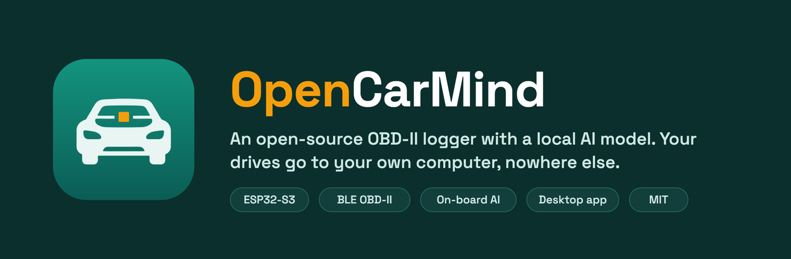
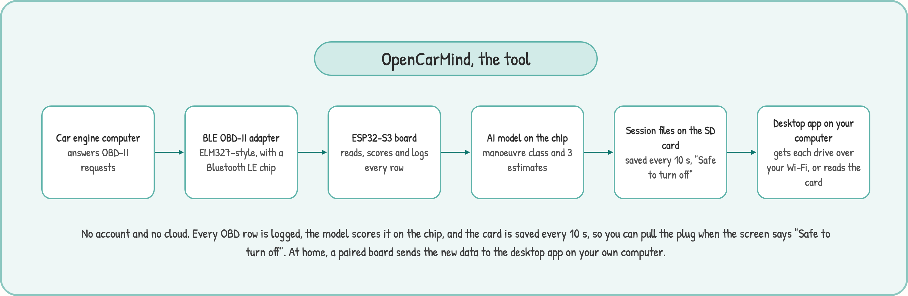
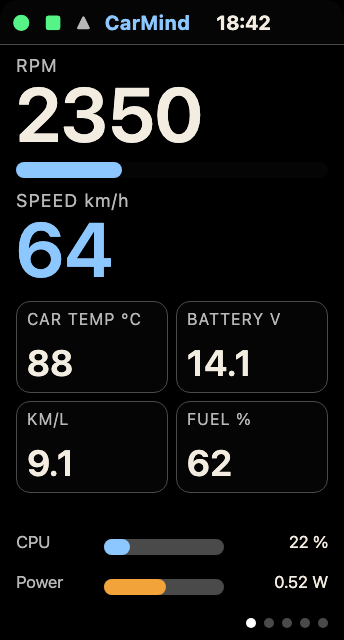
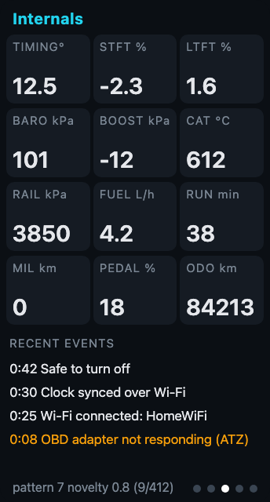
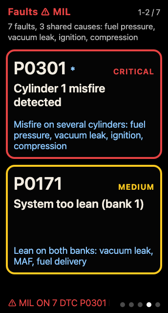
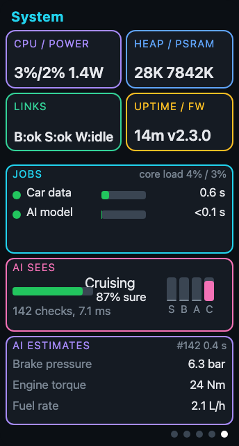
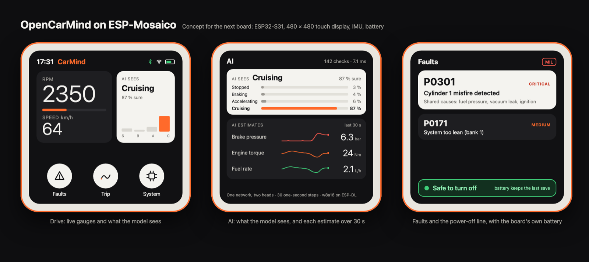

OpenCarMind turns an ESP32-S3 board and a Bluetooth LE OBD-II adapter into a car data logger with an 89 KB neural network on board. It needs no phone, no account and no internet. Every drive goes to an SD card in the car, and to the desktop app on your own computer if you pair it.

All standard Mode 01 fields (70 decoded), battery voltage, the VIN, and stored, pending and permanent trouble codes. One CSV row per poll cycle.
CarMind E.V classifies the last 5 s as stopped, braking, accelerating or cruising, and estimates brake pressure, flywheel torque and fuel rate. Scored on 37 cars it never saw. About 3.5 ms per run.
Plain CSV, JSON and text on an SD card you hold, saved every 10 s. A live line on the screen says when it is safe to cut the power.
The desktop app pairs with the board through an authenticated USB door, sets Wi-Fi and the time zone, and flashes firmware. Parked at home, the board sends new drives to the app over TLS every 10 s.
km/L, or mpg in the US and the UK, chosen once from the country your Wi-Fi access point broadcasts, and kept after a reboot (tested with a US access point). The fuel rate comes from the car's own PID, from airflow, or from the model on older cars, and "--" when the car gives nothing.
A fault engine groups trouble codes that share a cause, so a misfire and a lean code point at the same vacuum leak instead of two separate problems.
70 OBD-II fields are decoded and the rest are logged raw. The desktop app lists all of them per drive, so newer cars show odometer, oil temperature and hybrid data even where the screen has no room.
Every job has a period and a deadline. A scheduler checks load against the rate-monotonic bound, a watchdog resets a hung step, and a safe mode keeps logging if the model misbehaves.





Renders of the 1.47-inch panel. The screen switches to a light theme from 06:00 to 17:00 local time.
The board needs a Bluetooth LE adapter that speaks ELM327 commands. The ESP32-S3 has no Classic Bluetooth radio, so Bluetooth 3.0 adapters cannot connect. Built-in profiles cover the common serial layouts, and a generic fallback takes any service it can subscribe to and write. Only the LELink has been driven with this board. The full list, with sources and checked Amazon links, is in docs/ADAPTERS.md.
| Adapter | Bluetooth | Status |
|---|---|---|
| LELink², LELink | LE | tested |
| Veepeak OBDCheck BLE, BLE+ | LE | expected |
| OBDLink CX | LE 5.1, encrypted | expected, pairs on demand |
| Carista OBD2, Carista EVO | LE | expected |
| Vgate iCar Pro BLE 4.0, vLinker MC+ | LE | expected |
| Vgate vLinker FS, MS | LE and Classic | switch to "BLE+BT" first |
| Panlong PL-B04 (iOS option), DA200 | LE | expected |
| BlueDriver, V800 full-system scanners | private protocol | not expected |
| OBDLink MX+, OBDLink LX, KONNWEI KW902 | Classic only | will not work |
With every OBD row, CarMind E.V classifies the last 5 seconds as stopped, braking, accelerating or cruising, and estimates brake pressure, flywheel torque and fuel rate, which OBD does not report. It is a small quantised 1-D convolutional network run by ESP-DL[1]. It takes about 89 KB on the chip and about 3.5 ms per run. On data held out from training, it scores a manoeuvre macro-F1 of 0.887 on the public KIA drives and places 96.1 % of windows from 37 unseen VED cars in an allowed class.
Limits: outside one data set there is no brake-switch signal, so braking and cruising are partly ambiguous. No diesel car is in the data. Brake pressure is the weakest estimate.
Trained on public data, the HCRL Driving Dataset (Kwak, Woo and Kim, PST 2016)[2] and the Vehicle Energy Dataset (Oh, LeBlanc and Peng, 2020, Apache-2.0)[3], plus drives from my own car.

I have an ESP-Mosaico on order[4]. Its ESP32-S31 has two RISC-V cores at 320 MHz with a 128-bit SIMD path, Wi-Fi 6, and Bluetooth 5.4 with both LE and Classic[5]. For a car logger that means a 2.16-inch 480 × 480 AMOLED touch screen, Classic adapters such as the OBDLink MX+ within reach, CAN through TWAI and a transceiver, an IMU and magnetometer, a 65 mAh battery to finish the last save, and 16 MB of PSRAM[6],[7]. It has no microSD slot, so drives would go to its 128 MB NAND.
If you build with the ESP32, this is a good board to get, and the port goes faster with more people testing it. The Vision Combo Kit is 59 USD on the ESP-Mosaico Store (pre-order, about 15 days to dispatch, as of 3 November 2026). Found something on yours? Open an issue or a pull request on GitHub.
The S3 and S31 do not share machine code (Xtensa against RISC-V), but they share ESP-IDF. OpenCarMind was built for the S31 with ESP-IDF v6.1's preview target: every library compiled unchanged, and only the board pin map and one sleep-wakeup call needed changing before it linked. The model must be exported again for the S31, from the same weights. The full comparison is in the README.
The network on today's board is fixed. A private CarMind line already learns on the board in a narrow way: a small linear forecaster predicts the next OBD row and uses the error as its own label, keeping only running statistics and swapping weights only while parked. That code is plain C and should move to the S31 unchanged. The two heads of the CNN have no labels in the car, so they stay fixed today.
On a Mosaico they could learn. The accelerometer labels stopped, braking, accelerating and cruising, and PIDs 0x5E, 0x62 and 0x63 label fuel rate and torque on cars that report them. ESP-DL runs inference only, so the int8 trunk stays frozen and the heads, a few hundred weights, update in plain C[8],[9]. The 16 MB of PSRAM and the 128 MB NAND hold a replay buffer of past windows against forgetting[10], and the battery lets an update finish after the ignition is off. Both chips have single-precision float hardware only, so the S31's gains are clock, memory, battery and the motion sensor.
OpenCarMind will ship a release for the ESP-Mosaico. It builds from the same source tree as the S3 version, which stays supported. Work starts when the author's board arrives.
Keep the adapter in the car and carry the Mosaico with you. Get in, and it finds the adapter it already paired with and starts logging. Walk back inside, and it sends the drive to the desktop app over your Wi-Fi. For long drives, power it from the car's USB port or the Mosaico Battery Module.
Download the app for macOS, Windows or Linux from the latest release. Plug in the board over USB, open the Board page, and flash. The app bundles esptool and the firmware, so no ESP-IDF install is needed. Then pair with the 6-digit code the board shows, and add your Wi-Fi.
. $IDF_PATH/export.sh
idf.py set-target esp32s3
idf.py build
idf.py -p /dev/cu.usbmodemXXXX flashYou need ESP-IDF v6.1, a Waveshare ESP32-S3-LCD-1.47B and a FAT-formatted SD card. Settings and file formats are in docs/CONFIGURATION.md.
Yes, from a Bluetooth LE adapter that speaks the ELM327 command set. The ESP32-S3 has no Classic Bluetooth radio, so Classic-only adapters (Bluetooth 3.0, SPP) cannot connect. OpenCarMind finds the adapter, picks its serial characteristics, pairs only when the adapter asks, and polls every Mode 01 field the car reports.
The LELink has been tested on the board. Veepeak OBDCheck BLE and BLE+, OBDLink CX, Carista, Vgate iCar Pro BLE 4.0 and vLinker MC+ are expected to work from their published Bluetooth layouts. OBDLink MX+, OBDLink LX and other Classic-only adapters will not work. See the table above.
It classifies the last 5 seconds of driving as stopped, braking, accelerating or cruising, and estimates brake pressure, flywheel torque and fuel rate, which the OBD port does not report. It is 89 KB and runs in about 3.5 ms per row.
No. Drives are saved to an SD card in the car. Wi-Fi is optional: it sets the clock and, once paired, sends new drives to the desktop app on your own computer while the car is parked. Nothing goes to a cloud.
The Waveshare ESP32-S3-LCD-1.47B. Other ESP32-S3 boards need the pin map in main/board.h edited.
That is the next port. The S31 runs different machine code from the S3, but both use ESP-IDF, and OpenCarMind already compiles and links for the S31 with only the pin map and one wakeup call changed. The model needs a fresh export for the S31. Nothing has run on a real Mosaico yet.
Yes. It is open source under the MIT licence, with no account and no paid tier.